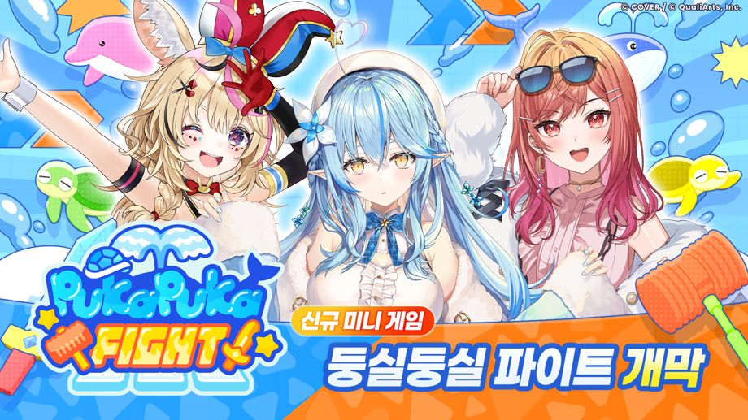
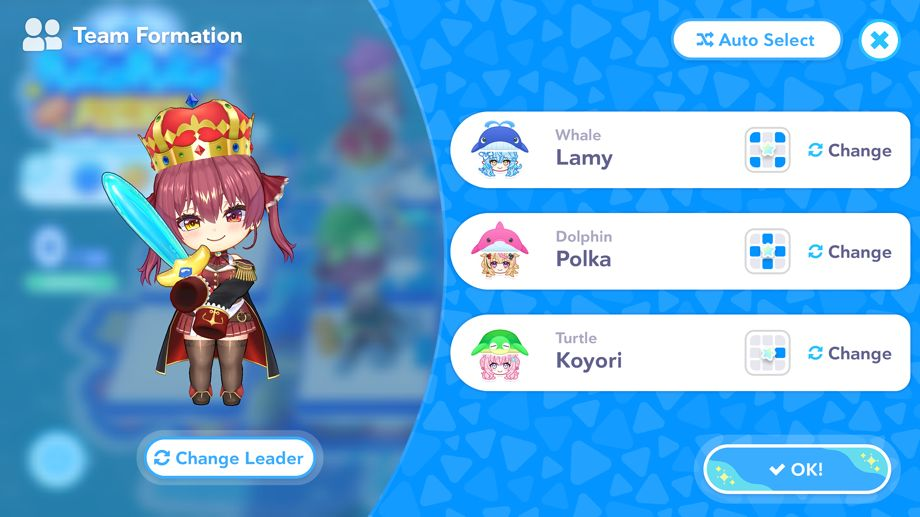
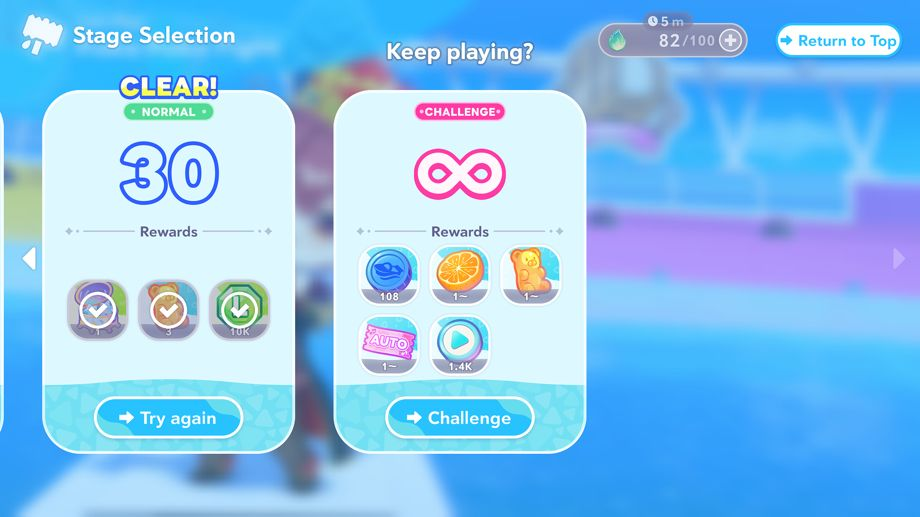

2026-11-25 11:00:00부터 신규 미니 게임 「둥실둥실 파이트」 개막!
◆미니게임 추가일
2026-11-25 11:00:00~
◆참가 조건
구역 퀘스트 「물에 둥둥 떠서 렛츠 파이트!」를 클리어
※구역 퀘스트 「물에 둥둥 떠서 렛츠 파이트!」는 메인 퀘스트 3장 「소다팝 라군」을 클리어하면 개방됩니다.
※멀티 플레이의 프라이빗 룸에서는 메인 퀘스트 1장 4화 「Mythical Connection」을 클리어하면 플레이할 수 있습니다.
신규 미니 게임 「둥실둥실 파이트」 개요

둥실둥실 파이트는 holo멤버들을 움직여서 상대방 리더를 물에 빠뜨려 승리를 노리는 미니 게임입니다.
리더를 제외한 상대방의 holo멤버는 물에 빠뜨리면 자신의 동료로 만들어서 팀의 일원으로 활용할 수 있습니다.
솔로 플레이에서는 NPC와, 멀티 플레이에서는 다른 플레이어와 대전할 수 있습니다.
승리 조건 안내

◆상대방 리더를 물에 빠뜨리기
상대방 리더(왕관 holo멤버)를 물에 빠뜨리면 승리합니다.
◆TRY
자신의 리더를 가장 오른쪽 열의 발판까지 전진시키면 「TRY」로 승리를 노릴 수 있습니다.
도착한 다음 턴에 리더가 물에 빠지지 않으면 승리합니다.
팀 편성 안내

holo멤버들의 모자에 따라 움직일 수 있는 방향이 다릅니다.
리더, 돌고래, 고래, 거북이(초록)의 4가지 역할에 holo멤버를 편성할 수 있습니다.
◆holo멤버 이동 방법
- 리더: 모든 방향으로 1칸 이동 가능
- 돌고래: 상하좌우 4방향으로 1칸 이동 가능
- 고래: 대각선 4방향으로 1칸 이동 가능
- 거북이(초록): 앞으로 1칸 이동 가능
- 거북이(금): 대각선 뒤쪽을 제외한 6방향으로 1칸 이동 가능
턴 중 조작 안내

자신과 상대방이 교대로 holo멤버를 움직여 대전합니다.
- holo멤버 이동: 자신의 holo멤버를 선택해 이동 가능한 발판을 선택하면 움직일 수 있습니다.
- 동료 배치: 동료가 된 holo멤버를 선택해 비어 있는 발판에 배치할 수 있습니다.
※상대방 holo멤버가 있는 발판으로 이동하면 해당 holo멤버를 물에 빠뜨릴 수 있습니다.
거북이 파워업 안내

거북이(초록)는 가장 오른쪽 열의 발판까지 이동하면 거북이(금)로 파워업합니다.
거북이(금)는 대각선 뒤쪽을 제외한 6방향으로 1칸 이동할 수 있습니다.
※동료로 만든 거북이(초록)를 가장 오른쪽 열의 발판에 배치하는 것으로는 파워업하지 않습니다.
※거북이(금)가 물에 떨어지면 거북이(초록)로 돌아갑니다.
솔로 플레이 안내

솔로 플레이에서는NORMAL과 CHALLENGE의 두 가지 모드를 즐길 수 있습니다.
◆NORMAL
총 30스테이지에 도전하는 모드입니다.
각 스테이지의 holo멤버에게 승리하면 다음 스테이지가 개방됩니다.
◆CHALLENGE
NORMAL을 모두 클리어하면 개방되는 모드입니다.
도전할 때마다 holo멤버들의 배치가 변경되어 다양한 난이도의 대전 상대와 배틀을 즐길 수 있습니다.
「무르기」 안내

솔로 플레이에서는 「무르기」를 사용할 수 있습니다.
「무르기」버튼을 누르면 한 턴 전의 내 차례로 돌아갈 수 있습니다.
※멀티 플레이에서는 사용할 수 없습니다.
보상에 대해

보상으로 소다팝 코인과 새로운 미끼를 획득할 수 있습니다.
◆NORMAL 보상
NORMAL에서는 각 스테이지를 처음으로 클리어했을 때 클리어 보상을 획득할 수 있습니다.
※재도전에서는 보상을 획득할 수 없습니다.
◆CHALLENGE 및 멀티 플레이 보상
CHALLENGE와 멀티 플레이에서는 승패와 관계없이 보상을 획득할 수 있습니다.
※멀티 플레이의 프라이빗 룸에서는 보상을 획득할 수 없습니다.
◆미니 게임 부스트 안내
NORMAL과 CHALLENGE에서는 미니 게임 부스트 소비 수가 고정되어 있습니다.
멀티 플레이에서는 미니 게임 부스트 소비 수를 선택할 수 있습니다.
멀티 플레이에서는 미니 게임 부스트 소비 수에 따라 획득할 수 있는 보상이 늘어납니다.
주의 사항
- 개최 기간 및 내용은 예고 없이 변경될 수 있습니다.
- NORMAL 보상은 Holo 패스포트 및 Holo멤버 보드에 따른 보상량 상승 대상에 해당하지 않습니다.